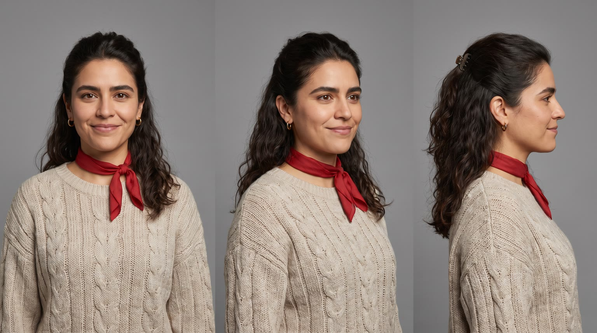
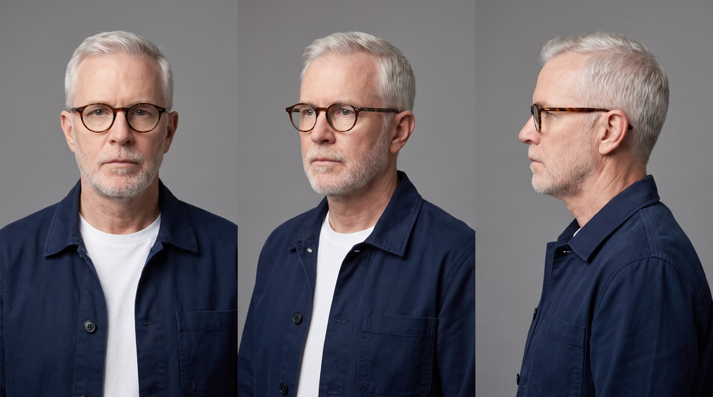
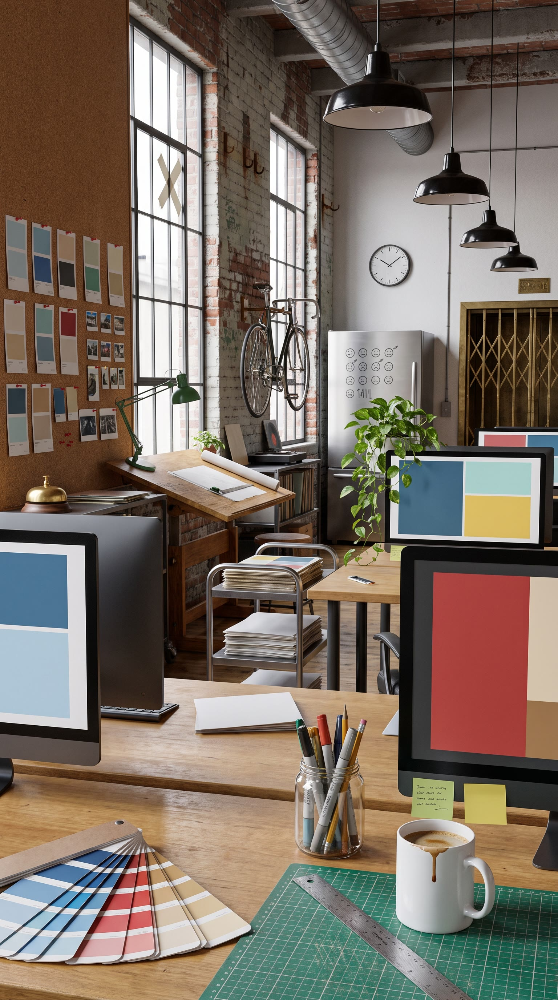
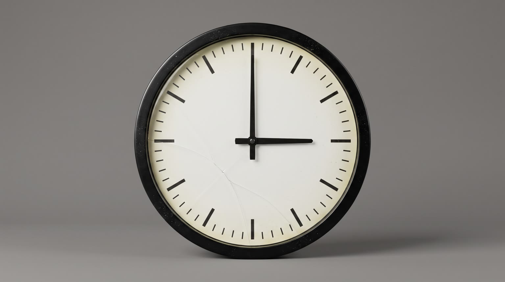
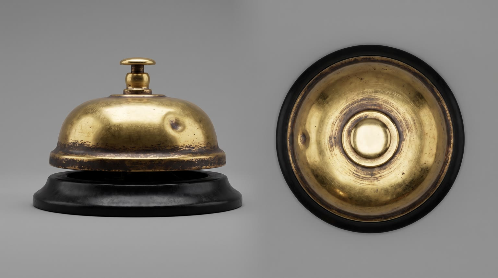
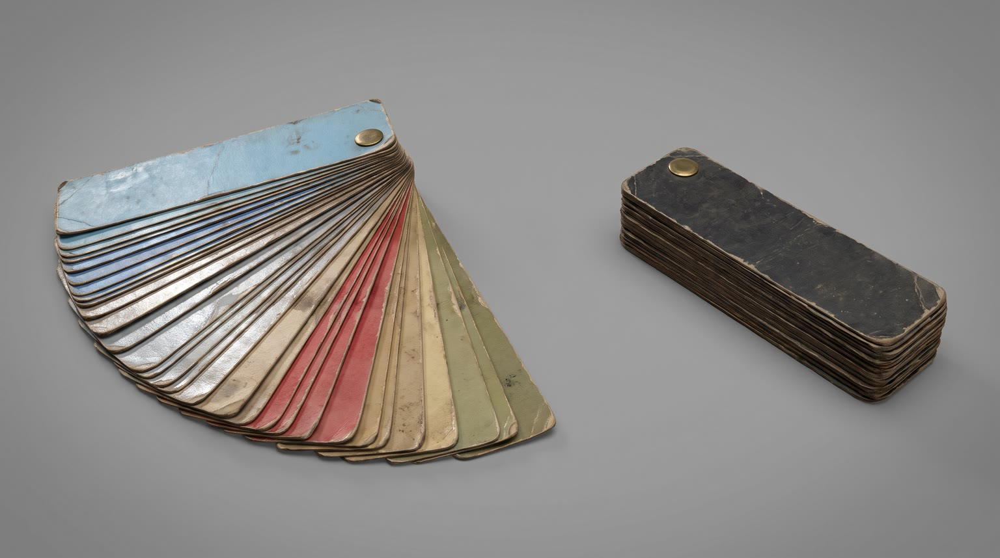

All templates · template.json · original storyboard
Problem to solution (before and after)problem_solution-01-the-3pm-wallThe 3pm Wall
At 3pm a designer's whole afternoon turns grey and slow motion, ten minutes before the client call. One moment with {{product.name}} and the colour and speed come back.
Fit by product type
| ingested | great | an afternoon pick-me-up from the studio fridge is the classic 3pm fix |
| applied | good | a face mist, balm or eye cream from her desk drawer; colour spreading from her fingertips reads well |
| worn | good | glasses, headphones, a sweater or shoes from the bottom drawer; colour starts where it touches her |
| handheld | great | a stylus, mouse, earbuds or desk gadget is native to a design studio; the first click brings the colour back |
| carried | good | a bag or organiser pulled from under the desk, colour pouring out as it opens |
| home | good | lamps, chairs, desk risers, plant lights and speakers switch her corner back to colour; the reveal becomes turning toward it rather than opening something; not for sofas or beds |
| consumable | great | a pack from the studio kitchen cupboard, torn open |
Refuses: products for children; alcohol; sleep aids or sedatives (the story is getting sharp again); medicines or anything whose benefit would read as a medical fix for tiredness; products whose page benefits have nothing to do with focus, energy, comfort or mood (the 3pm wall must be the problem they solve)
Cast, world and props (shipped with the template)






- Fieldnote Studio is nine people on the fourth floor of a 1911 button factory in Pittsburgh. The freight elevator still has its brass scissor gate and still gets stuck between floors.
- Walt Brennan founded the studio in 1998 on the same oak drafting table he works at now. He rings a small brass counter bell on the shelf every time a client signs off, and it has not rung since August.
- Carmen Reyes has been there six years. At 3:10pm she presents the rebrand for Harbor and Pine, a family seafood grocer with 14 stores and the studio's biggest account.
- The studio fridge carries a hand-drawn tally of lost afternoons in grey marker: little sleeping faces, 23 of them this quarter.
- The trailing pothos on Carmen's monitor was rescued from the lobby bin in her first week and now reaches the floor.
Script: what each line must do
Right column is the worked example for Red Bull Sugarfree.
| Time | Speaker | Intent (template) | Example |
|---|---|---|---|
| 0.4-2.5 | carmen | Fixed: Three p.m. My brain just left the building. Max 10 words. Delivery: flat, deadpan, to camera, one slow blink after | Three p.m. My brain just left the building. |
| 3.2-5.0 | carmen (off camera) | Fixed: Every click takes a year. Max 7 words. Delivery: voiceover, slow and heavy, dragging the last word | Every click takes a year. |
| 5.6-7.2 | walt | Fixed: Client call in ten, Carmen. Max 7 words. Delivery: deadpan, leaning over the desk divider, in slow motion but the words at normal speed | Client call in ten, Carmen. |
| 12.8-15.2 | carmen | Product line: say {{product.name}} (or its short spoken form) and the ONE benefit from product.benefits that ends the 3pm wall (focus, energy, comfort, calm, clarity...). benefit comes only from product.benefits, reworded no further than person and tense; brand spelled phonetically in the video prompt using product.phonetic; no medical claims about tiredness Max 9 words. Delivery: bright, quick, a small grin, the product at chest height or on | Red Bull Sugarfree. Sharp again, no sugar. |
| 20.0-21.4 | walt | Fixed: Okay. That's the one. Max 6 words. Delivery: dry, the smallest nod, genuinely impressed | Okay. That's the one. |
| 21.6-23.0 | carmen | Fixed: Not bad for three p.m. Max 7 words. Delivery: quiet, pleased, side glance to camera | Not bad for three p.m. |
| 27.0-29.4 | carmen (off camera) | Tagline: product.tagline if the page has one, otherwise a 3 to 5 word line that ties the product to getting the afternoon back. tagline verbatim from the page if it exists; no claims beyond product.benefits Max 6 words. Delivery: warm voiceover, unhurried, smiling | Wiiings without sugar. |
Product-adjacent props by type
| ingested | the small stainless studio fridge, plain unlabelled grey takeout boxes and a lidded glass container around the product on the middle shelf |
| applied | her top desk drawer of pencils and paper clips, with a small round compact mirror beside the product |
| worn | her deep bottom desk drawer, plain grey folders around the product |
| handheld | her top desk drawer of pencils, paper clips and spare stylus nibs around the product |
| carried | the floor under her desk, the product resting against the desk leg |
| home | her corner of the studio by the steel-framed window, where the product stands beside the pothos |
| consumable | the studio kitchen cupboard beside the fridge, plain grey jars around the product |
Shots and how the product appears for each type
S01 · 0 to 2.6 s · absent
Carmen slumped at her desk, chin on her fist, the whole studio drained to grey, the wall clock behind her at three o'clock. She tells the camera.
S02 · 2.6 to 5.0 s · absent
Her hand drags a stylus across a drawing tablet in slow motion; on the monitor the cursor crawls between grey colour blocks; beside the keyboard a cold coffee has a skin on it.
S03 · 5.0 to 7.6 s · absent
The grey studio in slow motion: a sheet of paper hangs mid-fall, a coworker in the background yawns endlessly, Walt leans over the desk divider and delivers the deadline.
S04 · 7.6 to 9.8 s · reveal
Carmen opens the grey place where the product lives (fridge, drawer, cupboard, her corner). Everything is grey except the product, glowing in full colour.
| ingested | View from inside the small office fridge looking out as Carmen, the woman from the character sheet, opens the door, her tired face lit by the fridge light; on the middle shelf, standing upright alone, {{product.visual}}, plain unlabelled grey takeout boxes on the other shelves |
| applied | View from inside her top desk drawer looking up as Carmen, the woman from the character sheet, pulls it open, her tired face above; among grey pencils, paper clips and a small round compact mirror, {{product.visual}} lies alone, label up |
| worn | View from inside her deep bottom desk drawer looking up as Carmen, the woman from the character sheet, pulls it open, her tired face above; among grey folders, {{product.visual}} lies folded or set out, its best side up |
| handheld | View from inside her top desk drawer looking up as Carmen, the woman from the character sheet, pulls it open, her tired face above; among grey pencils and paper clips, {{product.visual}} lies alone, logo up |
| carried | Low view from under her desk as Carmen, the woman from the character sheet, leans down with a tired face and reaches for {{product.visual}}, resting against the grey desk leg, logo to camera |
| home | View from just behind {{product.visual}}, standing in her corner of the studio by the steel-framed window, as Carmen, the woman from the character sheet, turns her chair toward it, her tired face lit by the grey window |
| consumable | View from inside the studio kitchen cupboard beside the fridge looking out as Carmen, the woman from the character sheet, opens the door, her tired face lit; on the middle shelf a pack of {{product.visual}} stands alone among plain grey jars |
S05 · 9.8 to 12.4 s · hero
Macro insert: the first moment of use; colour spreads out of the product in a soft wave across her fingers and up her sweater sleeve.
| ingested | a woman's hand in an oatmeal knit sleeve holding {{product.visual}} upright, label facing camera, her thumb just opening it with a tiny burst of fine mist |
| applied | a woman's hand in an oatmeal knit sleeve holding {{product.visual}}, label facing camera, pressing a little onto the fingertips of her other hand |
| worn | a woman's hands in oatmeal knit sleeves lifting {{product.visual}} from the drawer and starting to put it on, its best detail to camera |
| handheld | a woman's hand in an oatmeal knit sleeve gripping {{product.visual}}, logo facing camera, her thumb or finger giving it its first click or tap |
| carried | a woman's hands in oatmeal knit sleeves unzipping or unclasping {{product.visual}} on her lap, logo facing camera, colour spilling out of the opening |
| home | a woman's hand in an oatmeal knit sleeve switching on or touching {{product.visual}} in her studio corner, colour blooming out of it across the floorboards |
| consumable | a woman's hand in an oatmeal knit sleeve tearing open one of the product ({{product.visual}}), label facing camera, a tiny puff as it opens |
S06 · 12.4 to 15.4 s · in_use
Full colour, warm window light. Carmen, the product in hand or in use, sits up straight and says the line.
| ingested | holding {{product.visual}} in her fingertips at chest height, just lowered from a sip, large in the frame, label facing camera |
| applied | holding {{product.visual}} at chest height, label facing camera, a fresh glow on her cheekbones where she just applied it |
| worn | wearing {{product.visual}}, one hand settling it into place, the product clearly in frame |
| handheld | holding {{product.visual}} at chest height, large in the frame, logo facing camera, about to use it again |
| carried | with {{product.visual}} open on her lap, logo facing camera, pulling her sketchbook out of it |
| home | leaning back in or beside {{product.visual}}, now on and in full colour behind her shoulder, the product clearly in frame |
| consumable | holding the open pack of {{product.visual}} at chest height, large in the frame, label facing camera |
S07 · 15.4 to 19.0 s · background
She slides her chair to the monitor and works fast: stylus flying, colour blocks snapping into a finished layout; the paper that was frozen mid-air lands on the desk; the product beside her.
| ingested | {{product.visual}} stands upright on the desk beside her drawing tablet, opened, label facing camera |
| applied | {{product.visual}} stands on the desk beside her drawing tablet, label facing camera |
| worn | She is wearing {{product.visual}} |
| handheld | She is working with {{product.visual}}, or it rests beside her drawing tablet, logo facing camera |
| carried | {{product.visual}} hangs open from the back of her chair, logo facing camera |
| home | {{product.visual}} is on and working beside her desk |
| consumable | The open pack of {{product.visual}} lies on the desk beside her drawing tablet, label facing camera |
S08 · 19.0 to 23.2 s · absent
Carmen presents on the big screen to the client call; Walt stands behind her chair, arms folded, and approves. She glances to camera.
S09 · 23.2 to 26.2 s · in_use
Before and after in one frame: top half, grey slumped Carmen at 3:00; bottom half, full-colour upright Carmen at 3:10 with the product.
| ingested | holding {{product.visual}} upright with its label facing camera |
| applied | holding {{product.visual}} with its label facing camera, a fresh glow on her face |
| worn | wearing {{product.visual}} |
| handheld | holding {{product.visual}} with its logo facing camera |
| carried | {{product.visual}} open on the desk in front of her, logo facing camera |
| home | {{product.visual}} on and in full colour beside her desk |
| consumable | holding the open pack of {{product.visual}} with its label facing camera |
S10 · 26.2 to 30 s · hero
The product in warm afternoon light next to finished mockups and the clock, now past three. Tagline and pack shot.
| ingested | {{product.visual}} standing upright on a light wooden desk in the sunlit design studio, cold droplets on it |
| applied | {{product.visual}} standing upright on a light wooden desk in the sunlit design studio |
| worn | {{product.visual}} laid neatly on a light wooden desk in the sunlit design studio, its best side to camera |
| handheld | {{product.visual}} resting on a light wooden desk in the sunlit design studio, logo to camera |
| carried | {{product.visual}} standing on a light wooden desk in the sunlit design studio, logo to camera |
| home | {{product.visual}} in her sunlit corner of the design studio beside her desk, the wall clock above it |
| consumable | the pack of {{product.visual}} standing upright on a light wooden desk in the sunlit design studio |
Generation units (templated prompts)
U1 · 10 s
9:16 commercial, the entire scene in desaturated black and white greyscale, flat overcast fluorescent light, visual slow motion on everything except speech. Shot 1 (0 to 2.6 s): locked medium close-up of @Image1 (Carmen) slumped at her desk, chin on her fist, a plain numberless wall clock at three behind her; flat and deadpan to camera: "Three p.m. My brain just left the building." Shot 2 (2.6 to 5 s): over-the-shoulder insert, her hand drags a stylus in slow motion, the monitor shows only grey blocks, a cold coffee with a skin; her voiceover, slow and heavy: "Every click takes a year." Shot 3 (5 to 7.6 s): medium wide, a sheet of paper drifting down in extreme slow motion, a coworker yawning endlessly, @Image2 (Walt) leans over the divider, deadpan: "Client call in ten, Carmen." Shot 4 (7.6 to 10 s): {{action.S04}}; everything is grey except the product from @Image4 in full colour. Native sound: muffled room tone, slowed and pitched-down office sounds, a ticking clock, the sound of the place opening. No music. No text on screen, no numerals on the clock, no logos.U2 · 6 s · exact-risk
9:16 commercial. Shot 1 (0 to 2.6 s): locked macro insert, {{action.S05}}; the product matches @Image1 exactly and a soft wave of colour spreads outward from it across her fingers and up her sleeve, turning the grey world back to full colour; the product itself never changes. Shot 2 (2.6 to 6 s): close-up of @Image2 (Carmen) at her desk, now in full warm colour with golden window light, {{action.S06}}, sits up straight and says quickly with a grin: "{{line.L4}}" (say the brand as {{product.phonetic}}). Keep the product's shape, colours and label exactly as @Image1. Native sound: the product's own crisp sound as the first full-bandwidth sound, then the room tone snaps to normal speed. No music.U3 · 11 s
9:16 commercial in full saturated colour, warm directional window light, energetic. Shot 1 (0 to 3.6 s): whip pan into a low wide, @Image1 (Carmen) rolls her chair to the monitor and works fast, stylus flying, abstract sky-blue, silver and red colour blocks snapping into a layout on screen, a sheet of paper lands on the desk, {{action.S07}}. Shot 2 (3.6 to 7.8 s): slow arc, medium two-shot, she presents on a large wall screen with blank video-call tiles; @Image2 (Walt) stands behind her, arms folded, dry: "Okay. That's the one." Carmen, quiet, with a side glance to camera: "Not bad for three p.m." Shot 3 (7.8 to 10.8 s): a locked top and bottom split frame of the same woman at the same desk, top half grey and slumped, bottom half full colour and upright, {{action.S09}}; hold still. Native sound: fast stylus taps, chair roll, a whoosh on the whip, dialogue. No music. No readable text on any screen.U4 · 5 s · exact-risk
9:16 premium pack shot. Slow push-in on {{action.S10}}; the product matches @Image1 exactly, label to camera, warm golden rim light; behind it, out of focus, a drawing tablet, sky-blue and silver paper swatches, a plant and a numberless wall clock. The product does not move or change. Keep empty space above the product. Native sound: soft studio ambience. No music, no text.